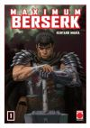

Lista de obligaciones de Guts
- Dejar de tener pesadillas, tomar una manzanilla para dormir
- Matar demonios
- Empezar a preocuparse de que no se muera cada persona que conoce
- Hacer algo de caso a Puck
- Engrasar el brazo mecánico cada 3 días
Libros edición Berserk Maximum (Panini)
(Autor: Kentaro Miura)
| Volumen |
Páginas |
Fecha de lanzamiento |
Enlace |
| 1 |
456 |
28/06/2017 |
 |
| 2 |
472 |
23/08/2017 |
 |
| 3 |
460 |
16/11/2017 |
 |
PUBLICIDAD